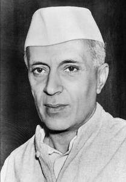
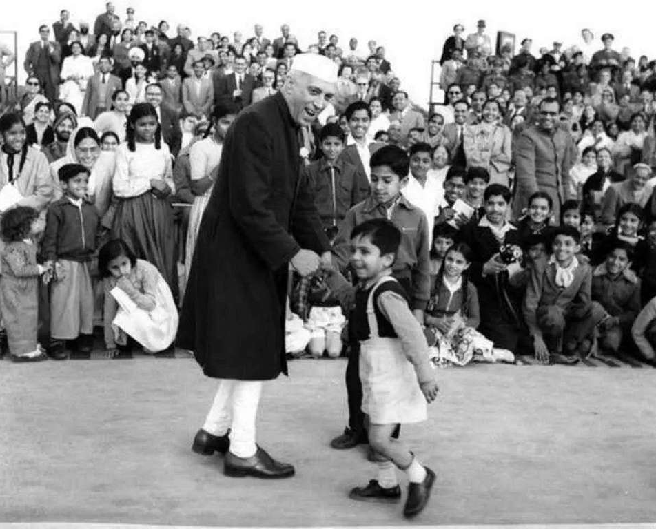
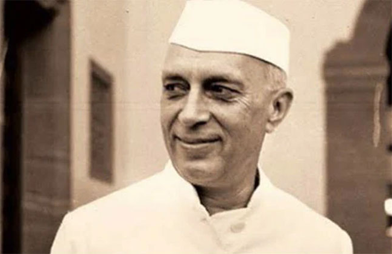

A Tribute to Pandit
Jawaharlal Nehru - Chacha
Nehru

Pandit Jawaharlal Nehru, the first Prime Minister of India, was fondly known as "Chacha Nehru" by children across the nation. His love for children was immense, and he believed that children are the real strength of a nation and the foundation of society.
Children's Day is celebrated on November 14th every year in India to commemorate his birthday. Nehru believed in nurturing young minds and emphasized the importance of giving love, care, and quality education to children.

"The children of today will make the India of tomorrow.
The way we bring them up will determine the future of the country."
- Jawaharlal Nehru
Nehru's deep affection for children made him their favorite "Chacha" (uncle). He believed children represented innocence, hope, and the promise of a better tomorrow.
He believed education was the key to building a strong and progressive nation. Nehru emphasized that quality education should be accessible to all children, regardless of their background.
He saw children as the architects of tomorrow's India and the hope of the future. He believed that investing in children's potential today would create a prosperous, democratic, and peaceful India for generations to come.
He advocated for children's rights, welfare, and proper development in all aspects. He believed every child deserved a nurturing environment where they could grow physically, mentally, and emotionally to reach their full potential.
Nehru's birthday continues to inspire the coming generations to prioritize children's happiness, dignity, and development as the foundation of a strong nation.
He established institutions like IITs and championed scientific temperament, believing that India's future lay in the hands of educated and innovative youth.